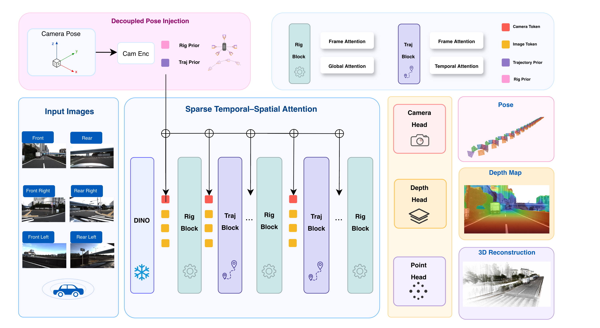
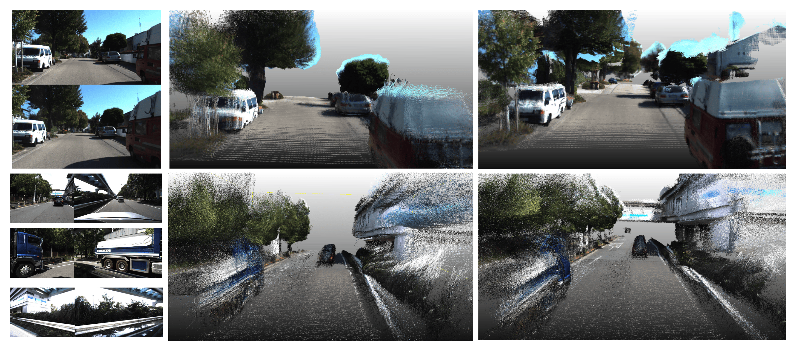
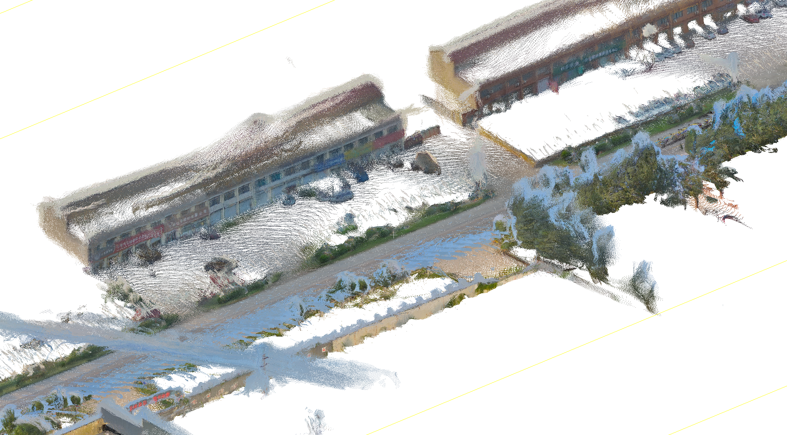
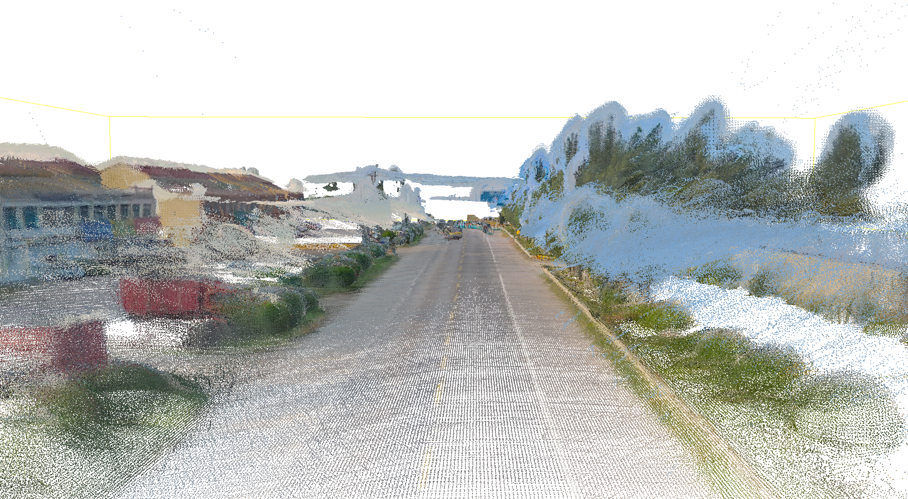
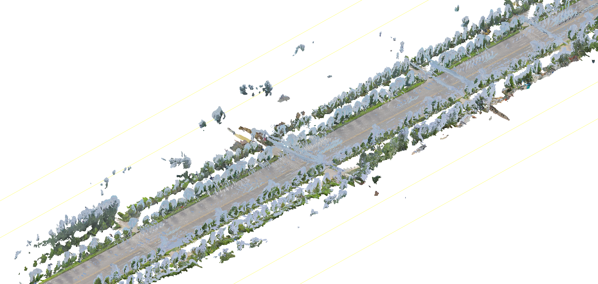

TRIG: Trajectory-Rig Decoupled Metric Geometry Learning
†Equal contribution *Corresponding author ‡Project leader
Abstract
Vision-centric autonomous driving requires accurate metric geometry and ego-motion estimation from synchronized multi-camera observations. Recent visual geometry models show strong performance in pose estimation, depth prediction, and 3D reconstruction, but are not tailored to rigid multi-camera driving systems. They often encode camera poses as entangled representations, in which time-varying ego-motion and static camera-rig geometry are jointly modeled, limiting the utilization of vehicle-side geometric priors.
We propose Trajectory-Rig Decoupled Metric Geometry Learning (TRIG), a geometry perception framework for autonomous driving. TRIG factorizes camera poses into ego-trajectory and camera-rig components, enabling separate modeling of ego-motion and static multi-camera topology. We introduce decoupled pose encoding and supervision, which separately constrain trajectory evolution and rig geometry for metric-consistent learning. Moreover, Sparse Temporal–Spatial Attention separates cross-camera interaction from temporal aggregation, reducing global attention cost while preserving geometric reasoning. Experiments on five autonomous driving benchmarks show that TRIG achieves state-of-the-art performance in pose estimation, metric depth prediction, and 3D reconstruction.
Method Overview

Overview of TRIG. Given synchronized multi-camera images, TRIG decouples pose information into static rig priors and time-varying trajectory priors. Image tokens are fused with these priors through sparse Temporal–Spatial Attention. Rig Blocks are sparsely inserted at layers 0, 4, 11, 17, and 23 to inject cross-camera rig constraints, while Traj Blocks capture temporal motion across frames.
Trajectory-Rig Decoupling
Decoupled Pose Encoding. TRIG factorizes multi-camera poses into two complementary components:
\(P_{w \leftarrow c}^{t} = P_{w \leftarrow \mathrm{ego}}^{t} \, P_{\mathrm{ego} \leftarrow c}^{c}\)
where \(P_{w \leftarrow \mathrm{ego}}^{t}\) is the ego-vehicle pose at time \(t\), and \(P_{\mathrm{ego} \leftarrow c}^{c}\) is the fixed camera extrinsics. The trajectory embedding \(z_{\mathrm{traj}}^{t} = \mathrm{MLP}_{\mathrm{traj}}(P^{t,0})\) captures time-varying ego-motion, while the rig embedding \(z_{\mathrm{rig}}^{c} = \mathrm{MLP}_{\mathrm{rig}}(P^{0,c})\) encodes static camera layout. The final geometry-aware embedding is composed additively: \(z_{\mathrm{geo}}^{t,c} = z_{\mathrm{traj}}^{t} + z_{\mathrm{rig}}^{c}\).
Sparse Temporal–Spatial Attention (STSA). Instead of applying dense self-attention over all tokens, TRIG factorizes interactions into three structured patterns:
- Frame Attention — refines local image tokens independently per camera
- Global Attention — enables cross-camera communication at sparse layers
- Temporal Attention — aggregates motion cues along each camera stream
These compose into two blocks: the Rig Block (Frame + Global) injects cross-camera constraints at layers \(\{0,4,11,17,23\}\), while the Traj Block (Frame + Temporal) runs at every layer for continuous temporal modeling. This sparse design achieves up to 1.72× speedup over VGGT-style attention.
Decoupled Pose Supervision. The loss separates relative pose pairs: cross-camera pairs at the same timestamp supervise rig geometry (\(\mathcal{L}_{\mathrm{rig}}\)), while cross-time pairs within the same camera supervise ego-motion (\(\mathcal{L}_{\mathrm{traj}}\)). This explicitly isolates temporal trajectory constraints from spatial rig constraints during training.
Results
We evaluate TRIG on five large-scale autonomous driving benchmarks: KITTI, NuScenes, Waymo, OpenScene, and DDAD. TRIG predicts metric scale directly and requires no post-hoc Sim(3) alignment.
3D Reconstruction
| Method | Metric | KITTI Acc↓ | KITTI Comp↓ |
NuScenes Acc↓ | NuScenes Comp↓ |
Waymo Acc↓ | Waymo Comp↓ |
OpenScene Acc↓ | OpenScene Comp↓ |
DDAD Acc↓ | DDAD Comp↓ |
|---|---|---|---|---|---|---|---|---|---|---|---|
| OmniVGGT | ✗ | 1.111 | 1.116 | 1.310 | 1.703 | 1.443 | 1.423 | 2.704 | 3.598 | 2.535 | 4.317 |
| CUT3R | ✗ | 0.965 | 2.050 | 2.054 | 2.603 | 3.391 | 4.216 | 1.864 | 2.258 | 2.774 | 4.677 |
| VGGT | ✗ | 1.154 | 1.294 | 1.300 | 1.498 | 1.641 | 2.053 | 1.422 | 1.496 | 1.741 | 2.473 |
| MapAnything | ✓ | 1.880 | 1.014 | 4.499 | 4.886 | 10.205 | 8.494 | 3.353 | 4.303 | 8.015 | 8.493 |
| StreamVGGT | ✗ | 3.421 | 2.196 | 2.588 | 2.414 | 3.630 | 3.275 | 2.304 | 2.098 | 2.717 | 2.788 |
| Driv3R | ✗ | 0.864 | 1.083 | 0.742 | 1.345 | 0.800 | 1.311 | 0.884 | 1.693 | 0.950 | 1.259 |
| DVGT | ✓ | 0.846 | 1.468 | 0.457 | 0.494 | 1.714 | 2.216 | 0.402 | 0.481 | 0.751 | 1.009 |
| TRIG (Ours) | ✓ | 0.333 | 0.351 | 0.314 | 0.361 | 0.509 | 1.192 | 0.380 | 0.434 | 0.587 | 0.842 |
3D reconstruction results. ✓ = predicts metric scale directly; ✗ = requires post-hoc Sim(3) alignment. Bold = best, underline = second best.
Metric Depth Estimation
| Method | KITTI AbsRel↓ | KITTI δ₁.₂₅↑ |
NuScenes AbsRel↓ | NuScenes δ₁.₂₅↑ |
Waymo AbsRel↓ | Waymo δ₁.₂₅↑ |
OpenScene AbsRel↓ | OpenScene δ₁.₂₅↑ |
DDAD AbsRel↓ | DDAD δ₁.₂₅↑ |
|---|---|---|---|---|---|---|---|---|---|---|
| OmniVGGT | 0.067 | 0.949 | 0.175 | 0.440 | 0.096 | 0.737 | 0.304 | 0.655 | 0.225 | 0.591 |
| CUT3R | 0.217 | 0.659 | 0.332 | 0.547 | 0.291 | 0.562 | 0.278 | 0.593 | 0.870 | 0.315 |
| VGGT | 0.158 | 0.801 | 0.243 | 0.729 | 0.176 | 0.811 | 0.241 | 0.719 | 0.613 | 0.476 |
| MapAnything | 0.188 | 0.725 | 0.568 | 0.269 | 0.507 | 0.211 | 0.486 | 0.240 | 1.971 | 0.195 |
| StreamVGGT | 0.362 | 0.469 | 0.412 | 0.540 | 0.339 | 0.584 | 0.319 | 0.607 | 0.838 | 0.415 |
| Driv3R | 0.164 | 0.784 | 0.189 | 0.721 | 0.168 | 0.770 | 0.188 | 0.740 | 0.185 | 0.740 |
| DVGT | 0.136 | 0.849 | 0.069 | 0.953 | 0.106 | 0.921 | 0.049 | 0.971 | 0.152 | 0.837 |
| TRIG (Ours) | 0.046 | 0.967 | 0.051 | 0.974 | 0.094 | 0.889 | 0.041 | 0.977 | 0.109 | 0.903 |
Ego-Pose Estimation
| Method | KITTI AUC@30°↑ | NuScenes AUC@30°↑ | Waymo AUC@30°↑ | OpenScene AUC@30°↑ | DDAD AUC@30°↑ |
|---|---|---|---|---|---|
| OmniVGGT | 88.9 | 38.5 | 44.7 | 33.9 | 34.5 |
| CUT3R | 51.8 | 43.5 | 50.1 | 34.7 | 48.6 |
| VGGT | 96.9 | 87.8 | 87.7 | 66.3 | 92.8 |
| MapAnything | 90.6 | 85.0 | 82.8 | 65.6 | 87.0 |
| StreamVGGT | 95.8 | 86.2 | 85.6 | 74.1 | 91.9 |
| DVGT | 87.6 | 86.5 | 86.4 | 74.7 | 95.1 |
| TRIG (Ours) | 99.1 | 96.6 | 97.7 | 69.5 | 97.4 |
Qualitative Comparison

Inputs DVGT TRIG (Ours) KITTI DDADQualitative comparison of 3D reconstruction. TRIG produces sharper geometry, cleaner object boundaries, and more consistent large-scale scene structure than DVGT across KITTI (top) and DDAD (bottom) driving scenes.
Supplementary: Real-World Reconstruction
Reconstruction results on six real-world autonomous driving sequences captured by a 6-camera vehicle, each spanning 30–40 seconds. All predictions are rescaled by pose-normalization — no Sim(3) alignment — with final point clouds voxel-filtered for visualization.


Scene 1


Scene 2


Scene 3
These sequences are drawn from diverse real-world conditions — urban streets, highways, and suburban areas — demonstrating TRIG's robust generalization across driving environments, all reconstructed in metric world coordinates without any post-hoc alignment.
Ablation Studies
Ablations averaged over DDAD, KITTI, NuScenes, and Waymo. Our decoupled pose supervision, sparse rig block design, and decoupled pose prior each contribute meaningfully to the final performance.
| Variant | Abs Rel ↓ | δ₁.₂₅ ↑ | Acc ↓ | Comp ↓ | AUC@30° ↑ |
|---|---|---|---|---|---|
| Full model (TRIG) | 0.069 | 0.943 | 0.411 | 0.577 | 97.69 |
| VGGT pose loss | 0.076 | 0.923 | 0.447 | 0.722 | 94.19 |
| w/o Rig block | 0.163 | 0.871 | 0.881 | 0.908 | 96.63 |
| Frame-only | 0.167 | 0.863 | 0.907 | 0.924 | 96.57 |
| Global-only | 0.155 | 0.874 | 0.834 | 0.880 | 96.71 |
| 3-layer rig block | 0.113 | 0.901 | 0.606 | 0.776 | 96.70 |
| OmniVGGT pose prior | 0.090 | 0.924 | 0.533 | 0.691 | 96.40 |
Runtime Efficiency
Measured on NuScenes (NVIDIA L20 GPU). STSA achieves significant speedups over VGGT-style attention on long sequences.
| Cams × Steps | Frames | TRIG (Ours) | VGGT-style | Speedup |
|---|---|---|---|---|
| 6 × 21 | 126 | 10.65s | 15.18s | 1.43× |
| 6 × 40 | 240 | 24.87s | 42.86s | 1.72× |
Key findings: Removing Rig blocks degrades reconstruction Accuracy from 0.411 to 0.881. The decoupled prior (vs. OmniVGGT entangled prior) reduces Completeness error from 0.691 to 0.577. Decoupled pose supervision improves Pose AUC at the strict 5° threshold from 76.33 to 86.92, indicating stronger resistance to pose drift.
BibTeX
@article{liao2026trig,
title={TRIG: Trajectory-Rig Decoupled Metric Geometry Learning},
author={Liao, Lizhou and Xu, Wentao and Wang, Handong and Yang, Lirong and Yang, Shuai and Liu, Weiwei and Huang, Chang},
journal={arXiv preprint arXiv:2607.05801},
year={2026}
}